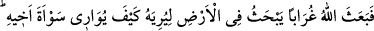
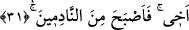

Basra’da en büyük mescidin bulunduğu yerde meydana geldi. Hâbil öldürüldüğünde
yirmi yaşındaydı.
“Bu yüzden de hüsrâna uğrayanlardan oldu.” Dînini ve dünyâsını kaybetti. İbn
Abbas (r.anhümâ) der ki: Dünyâsı ve âhireti ziyana uğradı. Dünyâsının ziyana uğraması,
ebeveynini üzüp kıyâmete kadar yerilen bir kişi olmasıdır. Âhiretinin ziyâna uğraması
karşılaşacağı büyük cezâdır.
31- Derken Allah, kardeşinin cesedini nasıl gömeceğini ona göstermek için yeri
eşeleyen bir karga gönderdi. (Katil kardeş) «Yazıklar olsun bana! Şu karga kadar
da olamadım mı ki, kardeşimin cesedini gömeyim.» dedi ve yaptığına pişman
olanlardan oldu.
“Derken Allah, kardeşinin cesedini nasıl gömeceğini ona göstermek için yeri
eşeleyen bir karga gönderdi.” Çünkü cesedin görülen yerde bırakılması, çirkin bir
durumdur. Bir görüşe göre “
” kelimesi, onun avret mahalli anlamındadır. Çünkü
onun elbiseleri soyulmuş durumda idi.
Rivâyet edildiğine göre Kâbil, Hâbil’i öldürdüğü zaman onu ağaçsız boş bir araziye
bıraktı. Onu ne yapacağını bilemedi. Çünkü o, yeryüzünde ölen ilk insandı. Onu yırtıcı
hayvanların yemesinden korktu ve bir torbanın içinde sırtında kırk gün taşıdı. Cesedi
bozulmaya başlayınca kuşlarla yırtıcı hayvanlar, o ne zaman Hâbil’i sırtından bırakacak
da onu yiyeceğiz diye bekleyerek etrafında dolaşıyorlardı. Allah iki karga gönderdi.
Onlar birbirleriyle dövüştüler ve biri diğerini öldürdü. Ona gagası ve ayaklarıyla bir
çukur kazıp oraya attı ve üstünü örttü. Kâbil de onu seyrediyordu.
Sanki “O karganın halini seyrederken ne dedi? diye bir soru sorulmuş ve cevap olarak
şöyle denilmiştir: “Yazıklar olsun bana!” Bu ifâde sızlanma ve hüzünlenme cümlesidir.
Mânâsı şöyledir: Ey benim kederim, hüznüm! Nerdesin? Gel, şimdi senin vaktindir.”
“Şu karga kadar olup kardeşimin cesedini gömmekten âciz miyim?” dedi.” Yani,
yazıklar olsun bana! Ben bir karga kadar olamadım ve kardeşimi gömmekten âciz mi
kaldım?, demektir.
“Ve yaptığına pişman olanlardan oldu.” Yani onu öldürdüğüne pişman oldu. Çünkü
yaptığı işte şaşkınlık içinde kaldı, onu uzun müddet sırtında taşıdı ve diğer şeyleri
yapmak zorunda kaldı. Onun pişmanlığı işlediği günahtan dolayı Allah korkusundan
değil de yukarıda sayılan sebeplerden olunca bu pişmanlık tevbe sayılmadı ve ona bir
fayda kazandırmadı.